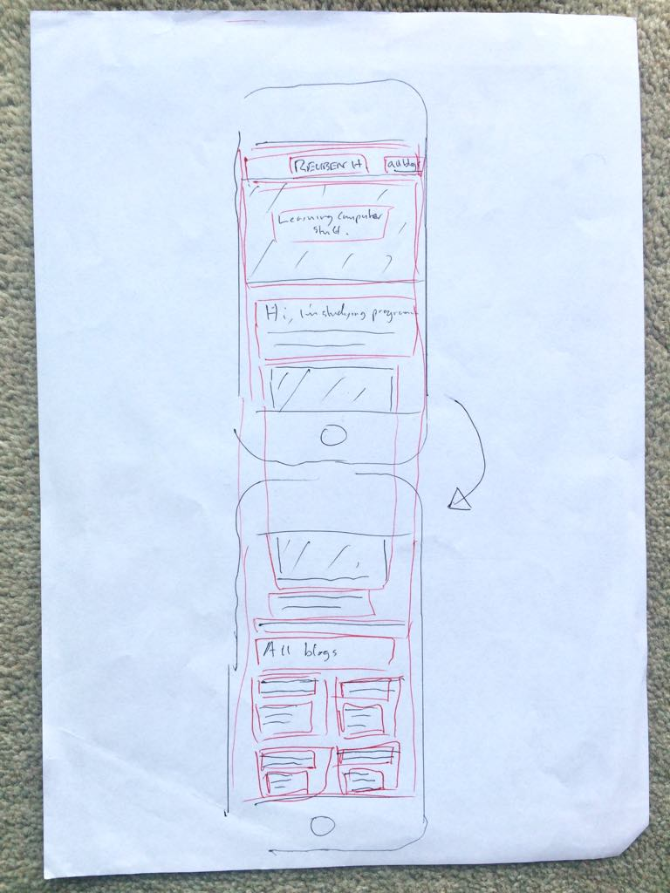
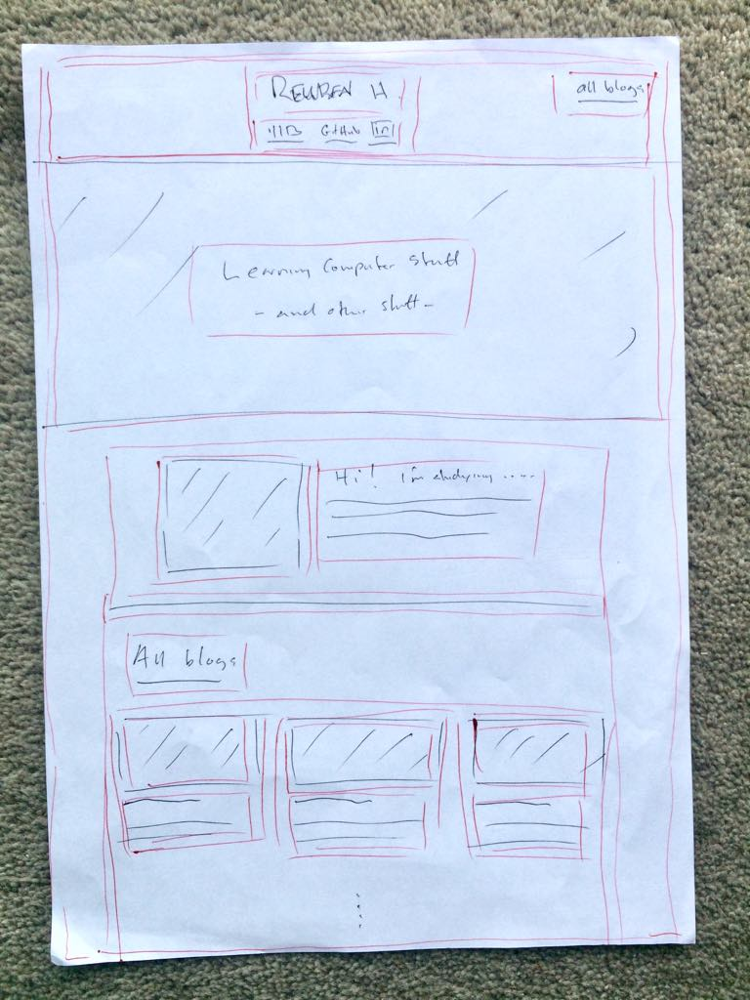

It's just a website where the content changes, or responds to, the size of the screen or browser window it's displayed on. It's incredibly important as there are so many divices with different screen sizes nowadays that are able to view the web, and you want your websites to have the desired effect on every visitor.
In a more complex application of this idea, the effect that you want to have might be different for mobile visitors - the term given for people viewing your website on their mobile phone - as you might be selling computer software or something else that's not designed to be used on a phone anyway, so you really just want them to get your few key messages, see some visuals and be impressed with your shiny modern design... so you'd design for your site to appear in that way on mobile screen sizes. For your desktop and laptop visitors, you might want to be showing off your software in action, offering free trial versions etc to capture email addresses, or encouraging people to purchase, so you'd design your site to appear that way on desktop and laptop screen sizes
But most of the time, it's just a fancy name for making your website content change size and layout depending on how big the user's screen is so that it's all still readable and nice.
I spent probably the majority of this week's study-time trying to make this website responsive, so have a play with resizing the browser window down to really small, or come to this page on your phone to see.
Mobile first is a design philosophy that does what it says on the can. You design your mobile website first - or, more accurately, how your website will appear on mobile screen sizes - and then once you're happy with that, move on to use that as a base for how your website will appear on all other screen sizes. It's a good move as most mobile designs can be tweaked just a little bit in terms of sizing, content and layout, and look good on bigger screen sizes, but it doesn't neccessarily work the other way around. So going mobile-first avoids doing the technical equivalent of painting yourself into a corner as this stickman below has done.
A framework is kind of like a template for building a website. Using one is like buying prefabricated house, as opposed to building a house from scratch. You still get to decide where all your stuff goes and how it looks, and you can change it a little bit here and there and maybe knock down a wall you really don't like as long as the rest of the structure isn't relying on that wall, but most of the hard work has been done for you.
A wireframe is a fancy name for a basic design sketch. It's a way for people to communicate design and functionality ideas without actually having to build the thing to show someone what they are thinking. Web designers use them to do exactly that, and to test whether their designs have the desired effect on people they show them to before they invest the time to build it.
There are a bunch of ways to do this, and some really awesome fancy apps to do it like InVision, but the easiest way is to just draw it on paper.
My homepage mobile wireframe for this site looks like this:
I crudely drew around my iPhone 5 to get a proper idea of the screen size, and also did my 'booxifying' in red pen over the top so it's not the prettiest thing, but you get the gist.
Here are my homepage desktop, blog mobile, and blog desktop wireframes:
I decided to have a 'related' side navigation on blogs in my desktop design, but it definitely doesn't fit on the mobile disign so I took it out. It was a bit of mission to figure out how but I ended up getting it by giving the side nav's div a class of side-nav and making a media query in my custom css file for screens that have a width of up to 549px maximum, and applying the style display: none; to things with the class side-nav. If you shrink the browser window on this page, the nav on the left should dissappear when the width gets down to 549px.
I also discovered that the skeleton wireframe we're using here will not display an empty column in a row, so when I was trying to balance elements like the logo at the top of the page to be center-aligned, I couldn't just put an empty two column div on the left to match the two column div on the right with the 'all blogs' button.
That wasn't too hard to solve as I found you can just use the offset-by-x classes to offset it any number of columns, but the mindboggle came when I needed to 'inset' columns, for lack of a better term, later on to do the same thing but on the right-hand side of the page. I needed this on my blogs to balance the two columns used for the side navigation so the center 8 column div with all the words could sit center aligned. Skeleton didn't have anything set up for this so I ended up trawling through their css files I am linking at the very top of the html file, finding out they made their offset classes and making my own 'inset' class in my custom css file and applying it to this center 8 column div containing all the words.
Reuben Harcourt.